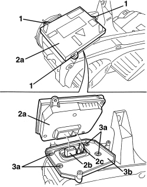
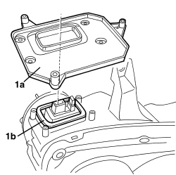

5540B40 CONTROL UNIT IN LEFT GAS DISCHARGE LIGHT CLUSTER - R.R.
- Path
- Procedures > 55 ELECTRICAL EQUIPMENT > 5540 EXTERIOR LIGHTING > 5540B HEADLAMPS > 5540B40 CONTROL UNIT IN LEFT GAS DISCHARGE LIGHT CLUSTER - R.R.
- Kind
- repair procedure (removal / refitting; the operation number is the code)
- Applies to
- all engines; all production periods
- Interactive page
- https://sloeber94.github.io/elrnDB-aBrrSpdr/en/#/946002392
Applies to: all engines; all production periods
 Removing
Removing
 Refitting
RefittingOp. 5540B81 LEFT GAS DISCHARGE LIGHT CLUSTER - R.R.
1. Loosen the control unit retaining bolts.
2. Remove control unit (2a), disconnecting electrical connections (2b) and (2c).
3. If necessary, undo the bolts (3a) and remove the control unit mount (3b).

Applies to: all engines; all production periods
Refitting
Removing- Check that the control unit is not damaged.
1. If removed from mount (1a), check that seal (1b) and the support surface on mount (1a) are clean and efficient before refitting.
2. Fit mount (1a) in place and secure it using the bolts.

Applies to: all engines; all production periods
- Position the control unit in its seat and do up the electrical connections.
- Tighten the control unit bolts.
Topics linked from this page (1)
Topics that link to this page (7)
- I005 DIPPED HEADLAMPS NOT WORKING
- I007 DIPPED BEAM (ONE) RH OR LH NOT WORKING
- I061 DIPPED HEADLAMPS DO NOT LIGHT UP AS THEY SHOULD
- I067 HEADLAMP ALIGNMENT CORRECTION NOT CARRIED OUT CORRECTLY (WITH VEHICLE IN MOTION)
- I081 HEADLAMP ALIGNMENT ADJUSTER (ONE) RH OR LH NOT WORKING
- 5540BB CHECK ALIGNMENT SENSORS
- 5540BO CHECK THE SPEED SIGNAL WIRING CONTINUITY INSIDE THE MASTER HEADLAMP